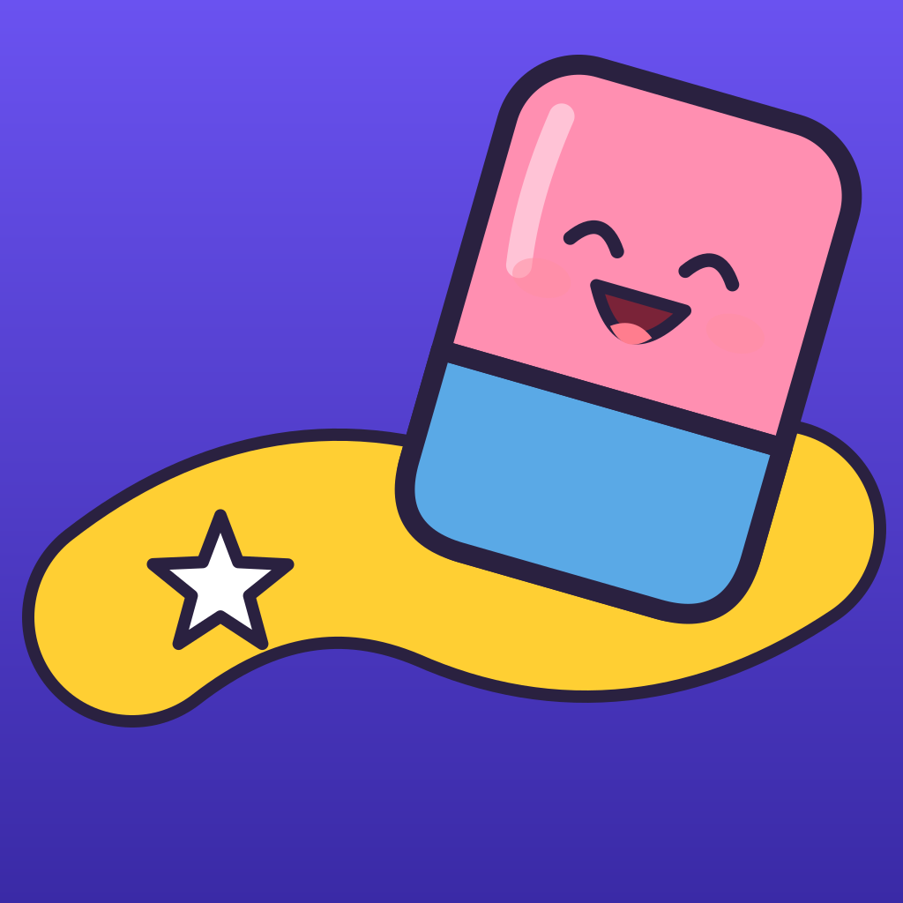
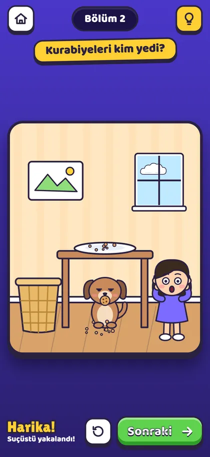
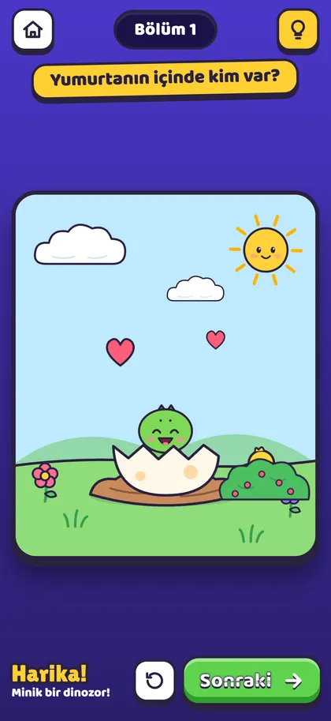
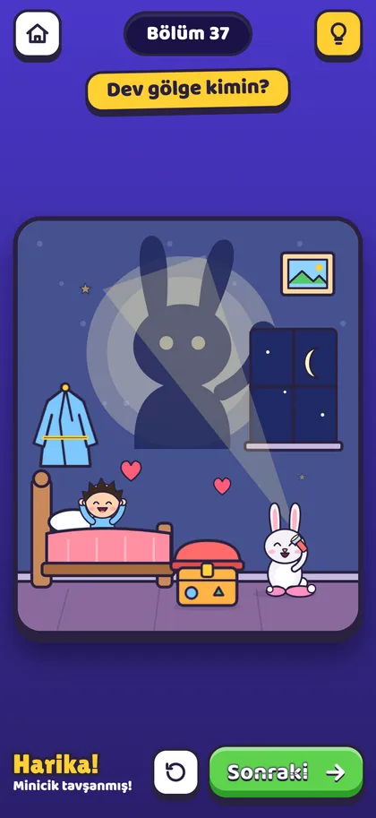
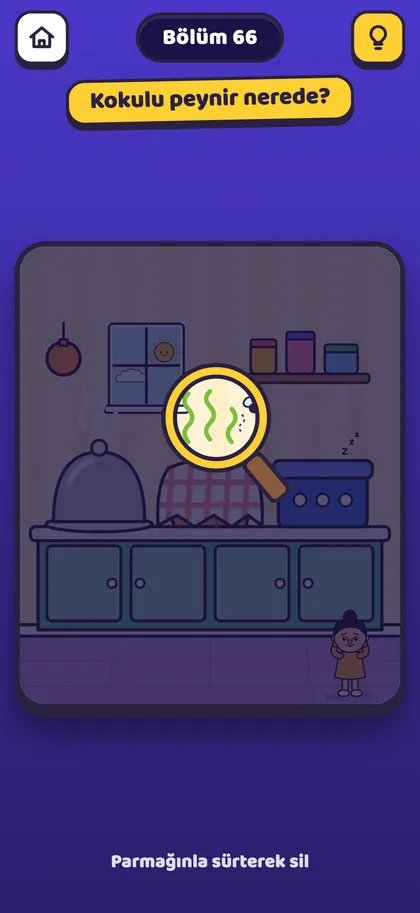

Bul Bakalım: Zeka Bulmacası
Cevap resmin içinde saklı. İpucunu fark et, doğru yeri parmağınla sil, altından çıkana şaşır.




Nasıl oynanır?
- Silerek bul: parmağını silgi gibi kullan, gizli cevabı ortaya çıkar.
- Çizerek çöz: eksik ipi, köprüyü ya da yolu tek çizgiyle tamamla.
- Taşıyarak çöz: doğru şeyi tut ve ait olduğu yere götür.
Sık sorulan sorular
Bul Bakalım ücretsiz mi?
Evet. Reklam içerir; "Reklamları Kaldır" tek seferlik satın almayla reklamları kalıcı olarak kapatır.
İnternetsiz oynanır mı?
Evet, bölümlerin hepsi telefonundadır.
Takıldığım bölümde ne yapmalıyım?
Sağ üstteki ampule dokun: önce büyüteç ipucunu, yine bulamazsan cevabın yerini gösterir.
Satın alımımı nasıl geri yüklerim?
"Reklamları Kaldır" ekranında "Satın alımı geri yükle"ye dokun.
Erase Detective: Brain Puzzle
Spot the clue, rub the right spot with your finger and see what was hiding. 300 free picture puzzles to erase, draw and drag, in English and Turkish, playable offline.
Support: tap the light-bulb for a clue, then the answer. To restore your ad-free purchase, tap "Restore purchase" on the "Remove Ads" screen.